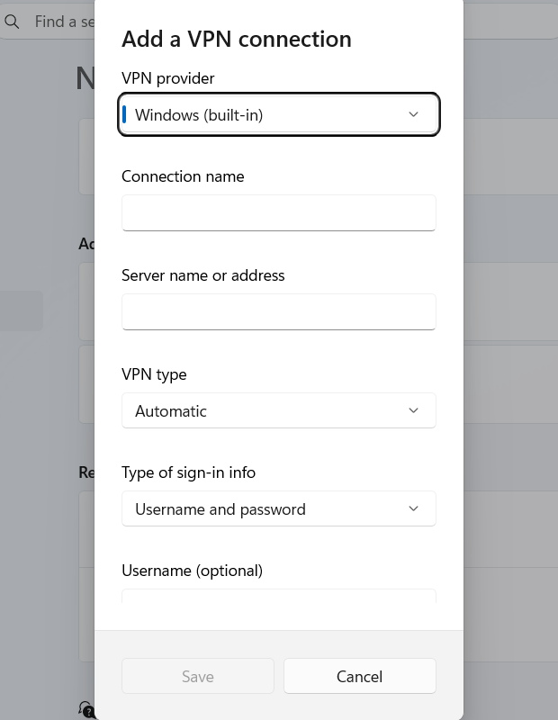

متى نعملها
نستخدمها عندما نعمل على شبكة عامة مثل الإنترنت، ونريد خصوصية وإخفاء عنوان بروتوكول الإنترنت (Internet Protocol - IP).
تقنية 6 من 15
نستخدمها عندما نعمل على شبكة عامة مثل الإنترنت، ونريد خصوصية وإخفاء عنوان بروتوكول الإنترنت (Internet Protocol - IP).
وظيفتها إنشاء نفق مشفّر بين جهاز المستخدم وخادم الشبكة الخاصة الافتراضية (Virtual Private Network - VPN). مزود الخدمة أو المتلصص لا يقرأ البيانات المارة في هذا النفق.
نفتح تطبيق الشبكة الخاصة الافتراضية (Virtual Private Network - VPN) أو نضيف الاتصال من إعدادات ويندوز (Windows)، ثم نتصل بالخادم.
